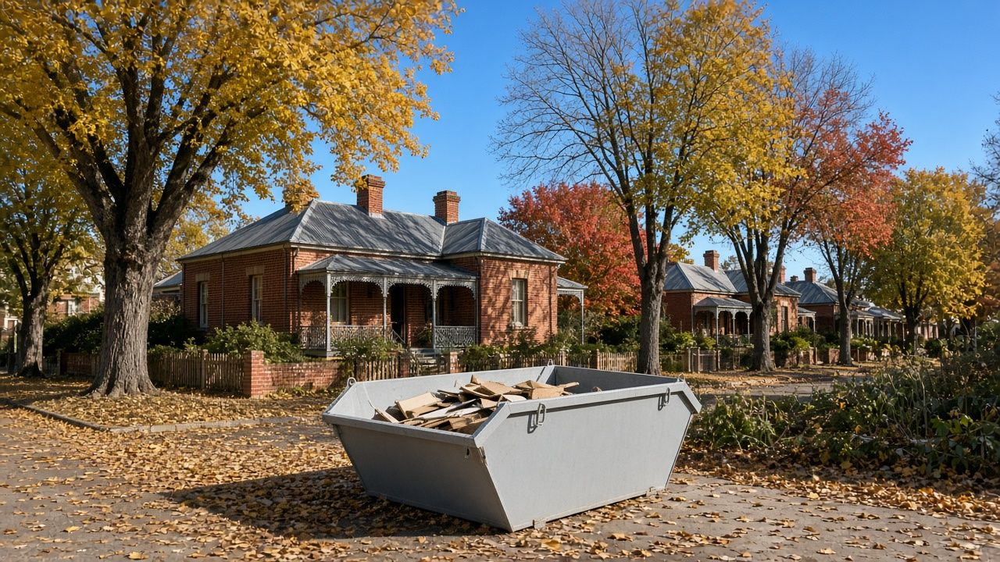
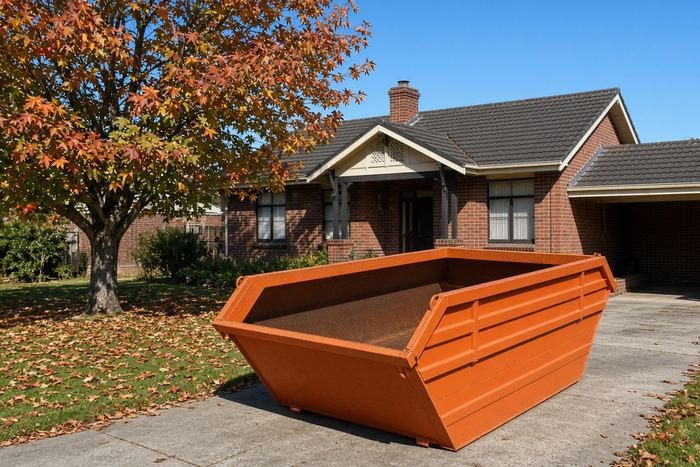
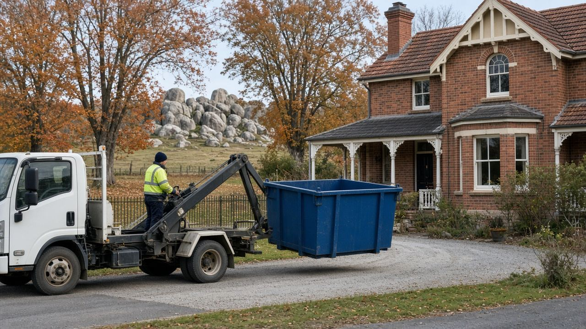
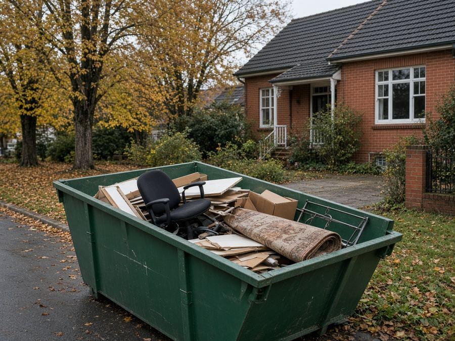
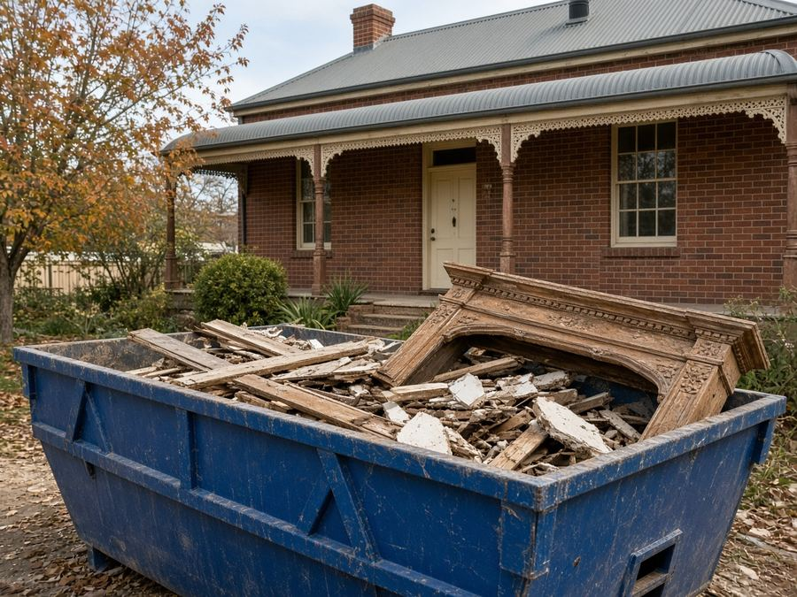
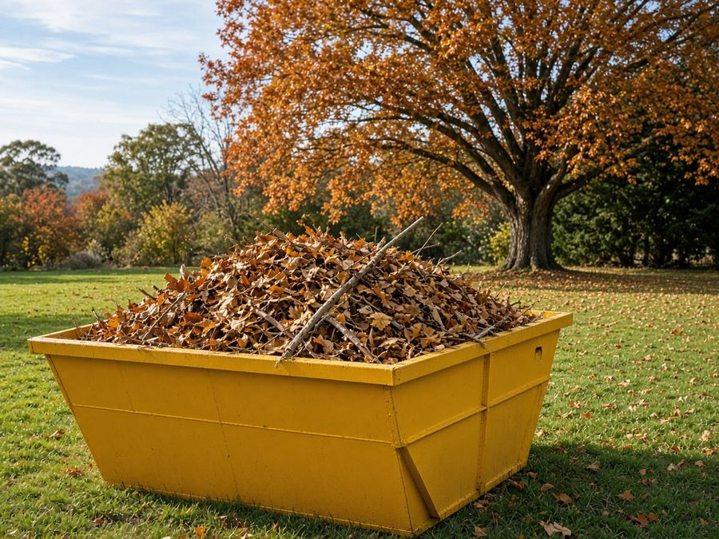
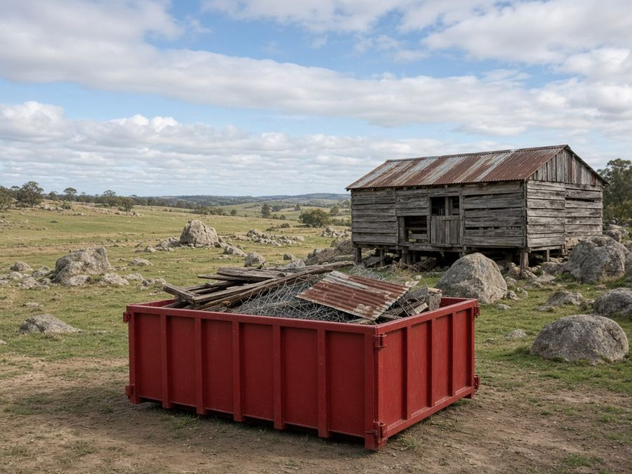
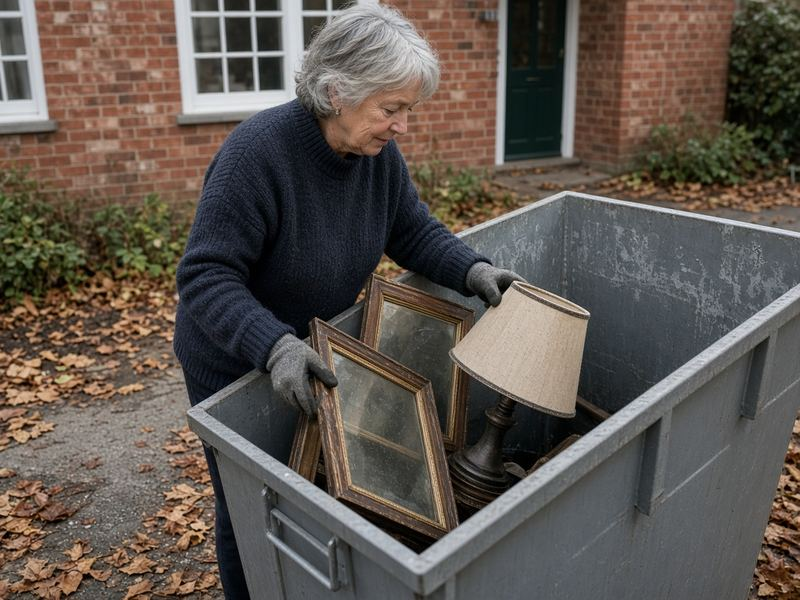

Skip Bins Armidale: Free Skip Bin Quotes Across the New England
Clearing a student house at the end of semester, renovating a heritage cottage or raking up a mountain of autumn leaves? Tell us your suburb, skip size and waste type, and we'll pass it to one local skip bin operator for a free, no-obligation quote.
Updated 23 October 2026
Get a free skip bin quote in Armidale
- Free quote for your exact job
- One local operator, not a call-centre auction
- Armidale, Guyra, Uralla and the New England
- No obligation to book
How it works
- 1
Tell us about the job
Choose your suburb, skip size and waste type in the quote form, then add your name and phone.
- 2
We pass it to one local operator
We send your request to one operator who services Armidale or your part of the New England.

3They confirm price and delivery
The operator contacts you to confirm the price and drop-off, and you only book if it suits.
Armidale Skip Bins is a referral and quote service run by Raf Web Studio. We don't own skips or trucks and we don't take payments. The operator who quotes you supplies the skip and sets the price and terms.
Skip bin sizes for Armidale jobs
Armidale's mix of student share houses, heritage homes and rural blocks means a wide range of jobs. A 2–3 m³ skip handles most end-of-lease clean-outs, 4–6 m³ a bathroom or kitchen, and 8 m³ or more a whole house or farm clean-up. Skips are measured in cubic metres (m³). Wheelie bin comparisons assume a standard 240-litre bin (0.24 m³). Trailer loads assume a 6×4 box trailer loaded level with its sides, roughly 1 m³. Shapes and dimensions vary between operators, so we don't list exact measurements.


Illustrations are approximate and not to an exact scale.
Mini skip
≈ 8 wheelie bins · ≈ 2 trailer loads
An end-of-lease clean-out, a shed, or a small load of heavy waste.
Small skip
≈ 13 wheelie bins · ≈ 3 trailer loads
A share-house clear-out or a weekend garden tidy-up.
Bathroom or laundry reno
≈ 17 wheelie bins · ≈ 4 trailer loads
A bathroom or laundry renovation, or carpet from a few rooms.
Kitchen reno or big clean-up
≈ 25 wheelie bins · ≈ 6 trailer loads
A kitchen renovation or a big autumn garden clean-up.
House clear-out
≈ 33 wheelie bins · ≈ 8 trailer loads
Moving house, downsizing or clearing a deceased estate.
Large renovation
≈ 38 wheelie bins · ≈ 9 trailer loads
A large renovation in a heritage or Federation home.
Builders and big jobs
≈ 50 wheelie bins · ≈ 12 trailer loads
Building sites, shed or woolshed clean-ups, or a large property clean-up. Needs good access.
Some operators offer skip bags of about 1 m³ for tight sites. Heavy waste (soil, granite, concrete) usually needs a smaller bin because of weight limits.
What can and can't go in a skip
Waste type matters as much as size. Council encourages sorting, and operators tip loads at licensed facilities such as the Armidale Waste Management Facility on Long Swamp Road. Different waste types cost different amounts to dispose of.
Usually accepted
- General household waste: furniture, toys, clothes, boxes, cupboard contents and general junk.
- Green waste: autumn leaves, prunings, lawn clippings, hedge trimmings and fallen branches (often cheaper on its own, with no dirt or rubbish mixed in).
- Renovation waste: timber, plasterboard, old cabinets, carpet, tiles and fittings.
- Heavy or clean fill: soil, sand, concrete, bricks, rock and pavers (often needs its own bin and has a lower weight limit).
- Scrap metal: old roofing iron, fencing, wire and old heaters.
Not accepted, or extra charge
- Asbestos and fibro: never in a normal skip (see below).
- Tyres: usually banned or charged per tyre.
- Car and household batteries: a fire risk in a skip.
- Gas bottles and aerosols: can explode when compacted.
- Paint, oils, chemicals and liquids: including heating oil, paint and garden chemicals.
- Mattresses: often accepted for an extra fee.
- Food waste, medical waste and e-waste: check first. Many operators won't take TVs, computers or fluorescent tubes.
A note on asbestos
Many older Armidale houses, sheds and woolsheds include fibro sheeting or asbestos-cement roofing. In NSW, removing more than 10 square metres of bonded (non-friable) asbestos needs a licensed removalist, and any friable asbestos needs a Class A licence. See SafeWork NSW's asbestos guidance. If you suspect asbestos, say so on the quote form. Never hide it in a general skip.
Dropping things off yourself
The Armidale Waste Management Facility and transfer station is at 108 Long Swamp Road. Armidale Regional Council lists it as open Monday to Friday 7:30am to 5pm and weekends and public holidays 12pm to 5pm, with last entry at 4:45pm. It's cashless, and council encourages sorting loads. Check Armidale Regional Council's website for fees and accepted items.
Skip bin prices in Armidale
We looked for skip bin prices published by operators servicing Armidale on 23 Oct 2026. The local operators we found don't publish prices, and the comparison-site figures we found weren't reliable, so we don't show them. Tell us about your job and we'll help you get a competitive price from a local operator. Get a free quote.
Prices vary by size, waste type and job. The operator quotes for your bin size, waste type and address.
What changes the price
Size and weight
Bigger bins cost more, but usually less per cubic metre. Heavy waste has weight limits.
Waste type
Clean green waste and general household waste usually cost less to tip than mixed building waste, soil or rock.
Distance and hire length
Delivery to Guyra, Ebor, Wollomombi or Hillgrove, extra days and tight access can all affect the price.
Keep green waste separate (great in autumn), book the smallest bin that fits and only hire for the days you need.
Putting a skip on the street: Armidale Regional Council rules
Last checked: 23 Oct 2026
On your own property
The easiest place for a skip is on your own land, such as a driveway or yard. Section 68 and Roads Act approvals cover public land and roads, so a skip wholly on your property generally doesn't need them. In heritage areas, avoid placing bins against old fences and garden walls, and protect driveways with planks.
On the road, footpath or nature strip
Armidale Regional Council's outdoor permits cover activities on public land under section 68 of the Local Government Act 1993. Placing something on a footpath or road also needs consent under section 138 of the Roads Act 1993, and Armidale is listed for online lodgement of section 138 applications through the NSW Planning Portal.
Before you book a skip on the street, check with Armidale Regional Council on 1300 136 833 or visit the council website about which approval you need, the cost and the timing. Mention it on the quote form too.
Wherever the skip goes, keep it clear of driveways, hydrants, bus stops and footpaths, and don't fill it above the rim.

Free skip bin quotes across the New England
Get a free quoteAreas we cover around Armidale
We take quote requests from Armidale and the surrounding New England towns. The operator confirms delivery to your address.
Armidale
- Armidale
- Kellys Plains
- Dangarsleigh
- Invergowrie
- Puddledock
- Black Mountain
- Saumarez Ponds
- Arding
Towns and villages
- Guyra
- Uralla
- Kentucky
- Wollomombi
- Hillgrove
- Ebor
Not listed? Choose "Other" in the form and tell us your town.
Common skip bin jobs in Armidale
The jobs that come up most in the New England.

Student and rental clean-outsEnd of semester or end of lease. A 2–4 m³ skip clears most share houses.
Heritage home renosOld linings, timber and fittings. Get any fibro checked before it goes in a bin.
Autumn and garden clean-upsLeaves, prunings and hedges. Keep it green-only for a better rate.
Rural and woolshed clean-upsOld fencing, iron and junk from sheds and properties around Guyra, Uralla and Wollomombi.Downsizing
Moving from a family home to something smaller. A larger skip and a flexible hire period help.
Winter wood and storm debris
Fallen limbs after wind or snow, and old timber. Clean green waste is often cheaper.
Skip bin FAQ for Armidale
How much does a skip bin cost in Armidale?
It depends on the size, waste type, hire period and distance. Local operators we checked don't publish set prices, so ask for a free quote.
Do I need a permit for a skip on the street in Armidale?
Generally yes. Placing a skip on a road or footpath needs council approval, which can include section 68 and section 138 Roads Act consent. A skip wholly on your property generally doesn't need it. Call council on 1300 136 833.
What size skip do I need for a student house?
A 2–3 m³ skip usually clears a share house. Choose "Not sure" in the form if you'd like help.
Do you cover Guyra and Uralla?
Yes, we take requests from Guyra, Uralla, Kentucky, Wollomombi, Hillgrove and Ebor. The operator confirms delivery.
Where is the Armidale tip?
The Armidale Waste Management Facility and transfer station is at 108 Long Swamp Road.
What are the tip's opening hours?
Council lists Monday to Friday 7:30am to 5pm and weekends and public holidays 12pm to 5pm, with last entry at 4:45pm. It's cashless.
Can I put autumn leaves in a skip?
Yes. Clean green waste is usually accepted and is often cheaper than mixed waste.
Can I put fibro in a skip?
No. Asbestos can't go in a general skip. More than 10 m² of bonded asbestos must be removed by a licensed removalist in NSW.
Can a skip go on a frosty or wet lawn?
Soft ground can be a problem for a heavy truck. A driveway or firm hardstand is safer. Mention access in the form.
What can't go in a skip?
Asbestos, tyres, batteries, gas bottles, chemicals, heating oil, paint and liquids. Mattresses and e-waste are often extra.
How long can I keep it?
Commonly a few days to a week, with extra days by arrangement.
Is Armidale Skip Bins a skip hire company?
No. It's a free referral and quote service run by Raf Web Studio. One local operator quotes you and supplies the skip.

Ready for a clear-out?
Tell us your suburb, skip size and waste type and we'll pass it to one local New England operator for a free quote.